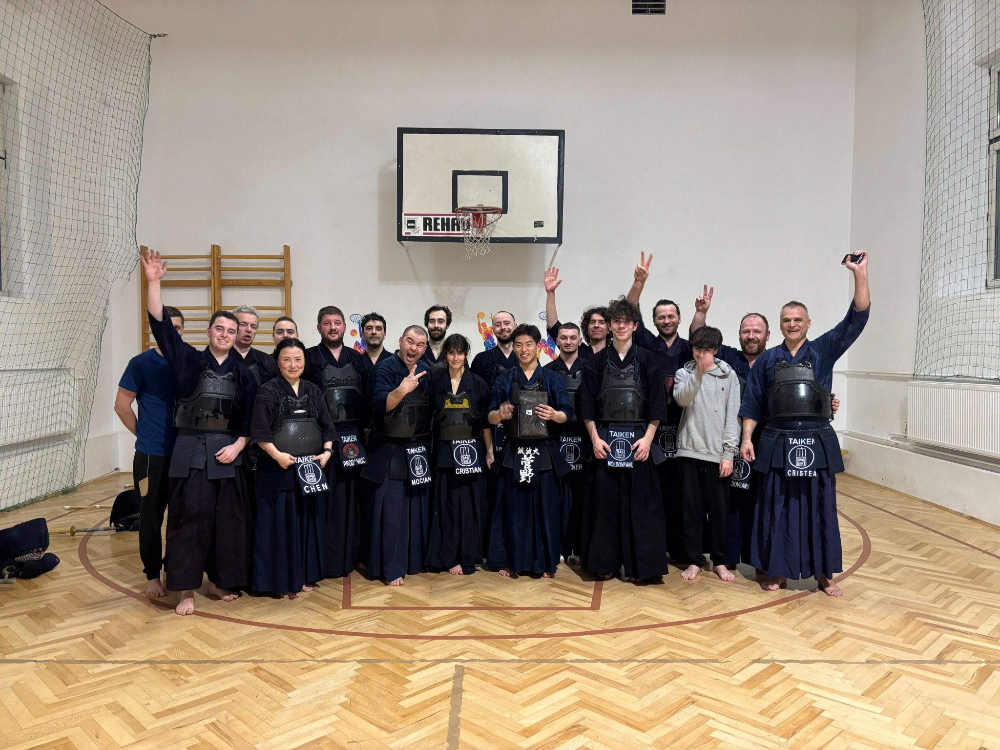
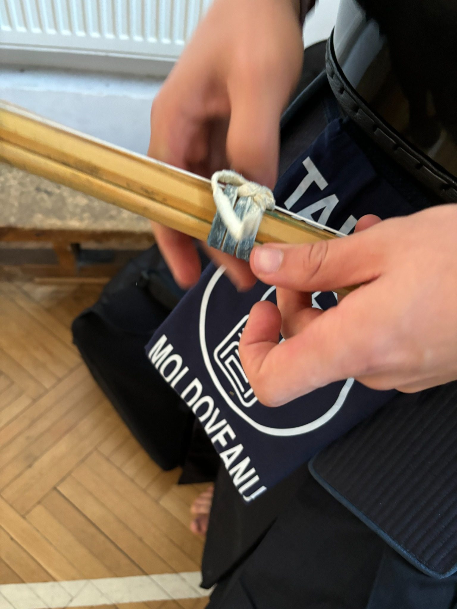
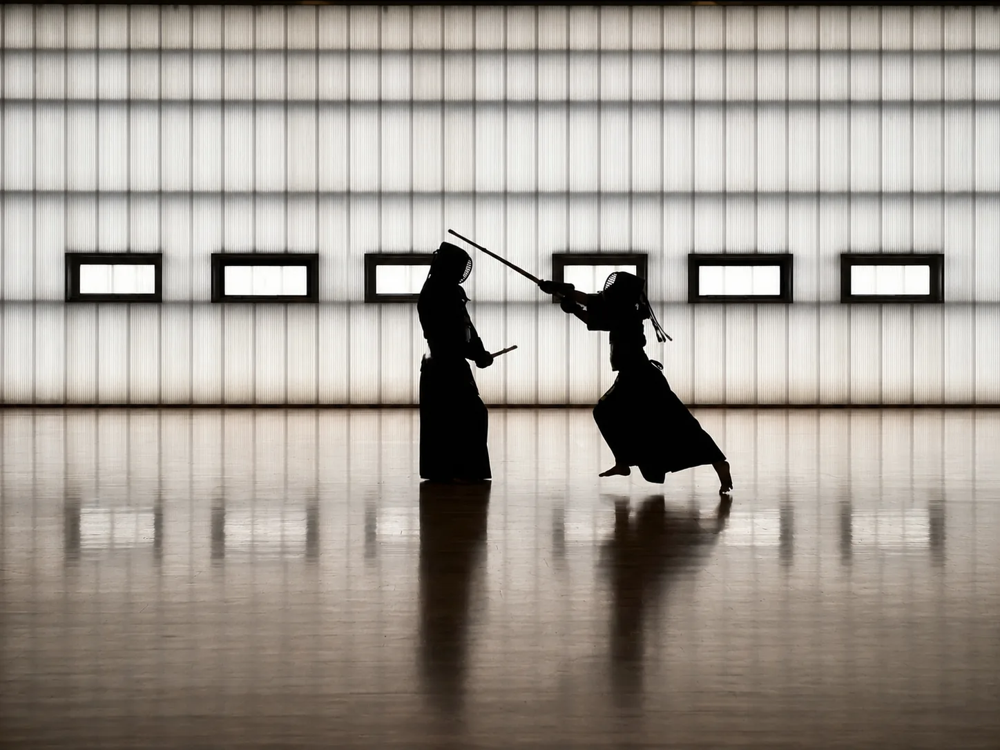

01
Respect
Fiecare exercițiu începe și se termină cu salut. Partenerul de antrenament nu este doar un adversar, ci omul care te ajută să progresezi.
Respect. Focus. Curaj.
Un sport japonez modern cu sabie de bambus, armură, disciplină și energie. Vino să descoperi kendo într-o sesiune introductivă și într-o comunitate care pune accent pe respect, concentrare și progres real.
În kendo înveți să îți coordonezi corpul, respirația, atenția și energia. Este o practică intensă, dar construită pe respect, disciplină și siguranță. Fiecare antrenament îți cere să fii prezent, atent și sincer cu tine însuți.
Fiecare exercițiu începe și se termină cu salut. Partenerul de antrenament nu este doar un adversar, ci omul care te ajută să progresezi.
Respirația, postura, ritmul și distanța cer concentrare continuă. Kendo te scoate din rutină și te obligă să fii aici și acum.
Înveți să intri în acțiune cu hotărâre, dar fără agresivitate. Kendo dezvoltă încrederea, controlul emoției și claritatea deciziei.
Pentru primul antrenament sunt suficiente haine comode de sport și curiozitate. Vino să vezi atmosfera, ritmul și comunitatea.
Antrenamentele Taiken au loc la sala de sport a Liceului Teoretic „Nicolae Bălcescu”, în zona centrală a Clujului.
Adresă: Strada Constanța nr. 6, Cluj-Napoca
Reper important: intrarea spre sala de sport este pe partea cu Inspectoratul Școlar Județean Cluj.
Kendo are o energie specială: ritmul pașilor pe podea, sunetul shinai-ului, atenția din privire și curajul de a intra în acțiune. Nu este un sport al agresivității, ci un antrenament al prezenței, al autocontrolului și al respectului față de celălalt.
Kendo te scoate din rutină și îți cere să fii prezent cu tot corpul. Înveți să transformi emoția, tensiunea și adrenalina în mișcare clară și controlată.
În timpul antrenamentului nu poți fi pe pilot automat. Respirația, postura, distanța și reacția cer concentrare, iar acest lucru ajută la disciplină și focus.
Fiecare antrenament te pune în fața unei mici provocări. Înveți să nu fugi de emoție, ci să mergi înainte cu respect, calm și hotărâre.
„Kendo este energia care te obligă să fii aici și acum.”
Un antrenament în care corpul, respirația, atenția și spiritul lucrează împreună.Lucrezi picioarele, trunchiul, brațele și respirația într-un mod dinamic, fără să fie nevoie de aparate sau greutăți.
Kendo te învață să asculți, să repeți, să corectezi și să progresezi pas cu pas, fără grabă și fără ego.
Ritualul salutului, lucrul cu partenerul și disciplina dojo-ului creează o atmosferă serioasă, dar prietenoasă.
Te antrenezi alături de oameni diferiți, dar uniți de aceeași idee: să devină mai buni prin practică constantă.
Taiken înseamnă mai mult decât tehnică. Înseamnă disciplină, energie și sprijin între colegi, indiferent dacă ești la primul pas sau practici de mai mult timp.



Vino la un antrenament pentru începători. Nu ai nevoie de experiență sau echipament special. Antrenamentele au loc luni, marți și joi, între 19:00 și 21:00, la sala de sport a Liceului Teoretic „Nicolae Bălcescu”, Strada Constanța nr. 6.
Scrie-ne pe WhatsApp sau pe e-mail și îți trimitem detaliile pentru primul antrenament.
Te așteptăm la Taiken. Dacă ai întrebări, ne poți contacta direct.
Scrie-ne pe WhatsAppNu. Sesiunea și primul contact cu dojo-ul sunt gândite pentru începători și pornesc de la mișcări simple.
Nu pentru primul antrenament. Sunt suficiente haine comode de sport. Restul se explică ulterior.
Da, cu acordul părinților și în funcție de vârstă. Accentul cade pe disciplină, coordonare, respect și siguranță.
Este un sport intens, dar controlat. Începătorii lucrează gradual și sub îndrumarea instructorilor.